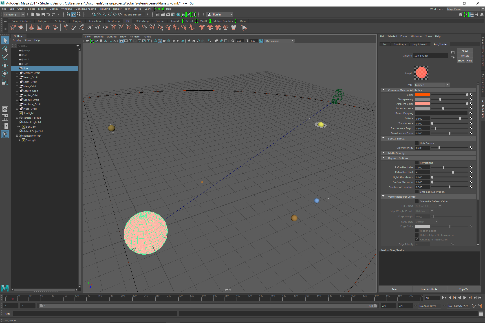
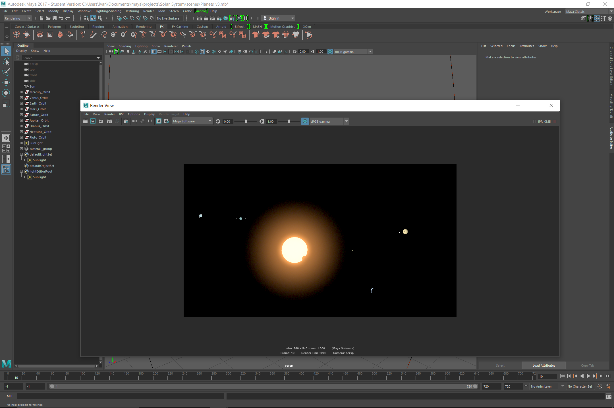
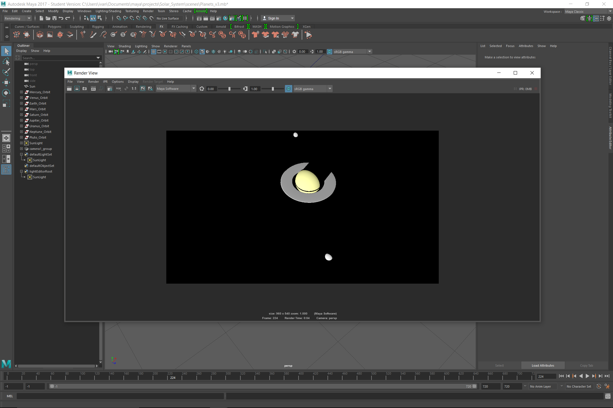

Project 1 - Planet Animation
Computer Animation
Spring 2017
Due 2/9/2017
Ivan Echevarria
This is the playblast of the animation straight from the book:
This is my modified version:
I made three significant changes to the original animation. The first was to add a camera that moved - it took a bit to figure out, but I am pleased with the result.
The second improvement was to spend some time on the sun shader. I increased its incandescence, added a glow effect, and put a light in its center. All these work together to make a much more realistic an aesthetically pleasing sun.
Lastly, I rendered the scence with raytracing to gain crisp shadows that add to the realism and aesthetic value.

In the end, I am pleased with the result. Rendering was a real pain - my computer is not particularly powerful, and rendering the 540p modified clip took roughly an hour. My favorite part of this process was setting up the lighting; getting the intensity to render well was a challenged, but I was pleased in the end.